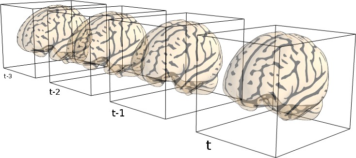

1. Raw fMRI Input
참여자
A (??)

참여자
B (??)

2. 4D
Representation

3. SwiFT
Foundation Backbone
Patch Partition & Embed
Stage 1
Abs. Pos. Embed
4D Block x 2
Abs. Pos. Embed
4D Block x 2
Stage 2-3
Patch Merging
4D Block x Ls
Patch Merging
4D Block x Ls
Stage 4
Patch Merging
Global Attn x 2
Patch Merging
Global Attn x 2
Normalization Layer
4. Downstream
Fine-tuning Head
Latent Representation
→
5. Task
Label / Prediction
참여자
A
MCI 위험도 예측결과
MCI 위험도 예측결과
MCI 가능성 매우 높음
실제 결과: MCI (경도인지장애)
참여자
B
MCI 위험도 예측결과
MCI 위험도 예측결과
MCI 위험도 낮음
실제 결과: HC (Normal)
6. Interpretation

1 / 7